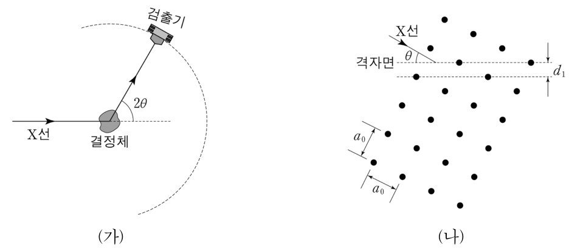

데이비슨–저머 실험 수업의 반성 — 모의실험·귀추·순환학습, 5E 재구성, 비고츠키 모둠 활동 + 정방 결정의 X선 회절Reflecting on a Davisson–Germer lesson · simulation, abduction, learning cycle → 5E, Vygotskian group work · Bragg diffraction from a square lattice
1927년 데이비슨(C. Davisson)과 저머(L. Germer)는 니켈 결정에 전자빔을 입사시켰더니 X선을 입사시켰을 때 얻은 회절무늬와 유사한 결과를 얻었고, 이로부터 전자가 파동의 성질을 가진다는 드브로이(de Broglie)의 이론을 검증할 수 있었다. 이 내용은 2009 개정 교육과정에 따른 과학과 교육과정의 고등학교 물리Ⅱ ‘미시 세계와 양자 현상’ 영역에 포함되어 있다. <자료 1>은 A 교사가 이 내용을 지도하기 위해 준비한 수업 계획이며, <자료 2>는 <자료 1>을 바탕으로 수업을 진행한 후 A 교사가 동료 교사들과 나눈 수업에 대한 평가, <자료 3>은 정방구조 결정에서의 X선 회절과 관련된 내용이다. 【30점】
[수업 목표] 데이비슨–저머 실험을 통하여 전자가 파동의 성질을 나타냄을 설명할 수 있다.
[수업 방법] 컴퓨터 모의실험, 귀추적(abductive) 사고, 순환학습 모형
[교수·학습 활동]
(1) 탐색: 파동의 회절에 대한 컴퓨터 모의실험 → X선 회절 사진 관찰 → 데이비슨–저머 실험 결과 관찰 → 두 회절 무늬 비교를 통한 전자의 파동 성질 추론
(2) 개념 소개: 드브로이의 물질파 이론 소개, 전자의 드브로이 파장 계산
(3) 개념 적용: 물질파 이론을 적용하여 전자현미경의 원리를 설명
A 교사: 학생들이 컴퓨터로 모의실험할 때까지는 좋아했는데, 모의실험이 끝나고 X선 회절이 나오면서부터는 학생들의 수업 참여도가 현저히 떨어져서 힘들었습니다. 또한, 수업 후 확인해 보니 대부분의 학생들이 전자가 횡파처럼 진동하며 움직인다고 생각하더군요.
이 교사: A 선생님의 수업 계획은 좋았습니다. 다만 수업 방법을 실제 수업에 적용할 때는 계획대로 되지 않는 부분이 있는데, 어떤 점에서 문제가 있고 그 이유가 무엇인지 함께 생각해 보면 다른 선생님들에게도 도움이 될 수 있을 겁니다.
A 교사: 저는 학생들이 탐색 단계에서 귀추적 사고를 활용하여 전자의 파동 성질을 스스로 발견하기를 기대했습니다. 그런데 일부 학생들은 전혀 수업을 이해하지 못한 것 같아서 과연 이러한 접근이 옳았는지 반성이 되네요.
김 교사: 물질파 이론을 먼저 소개하는 대신, 학생들의 탐색 활동을 먼저 도입한 이 수업 접근은 바람직하다고 생각합니다. 다만, 물질의 이중성 개념 자체가 워낙 추상적이라 내용 이해가 어려웠을 수 있어요. 순환학습 모형을 확장하여, 참여–탐색–설명–정교화–평가로 구성되는 5E 모형으로 현재의 교수·학습 활동을 보완하면 어떨까요?
박 교사: 탐색 단계를 통해 학생들의 자기 주도적 활동을 유도하는 것은 좋은 시도입니다. 그런데, 개별 활동 위주로 진행된 이 수업을 다양한 수준의 학생들이 고루 섞이는 모둠 활동 위주로 바꾸면, 개념 이해뿐만 아니라 과학적 태도 함양에도 더 도움이 되는 수업이 될 것 같네요.
그림 (가)는 파장 \(\lambda\)인 X선이 결정체에 입사하였을 때, 산란된 X선을 검출하는 것을 나타낸 모식도이다. 입사된 X선과 산란된 X선의 진행 방향이 이루는 각은 \(2\theta\)이다. 그림 (나)는 정방구조 결정체에서 파장 \(\lambda\)인 X선이 간격 \(d_1\)인 격자면에 각 \(\theta\)로 입사하는 것을 나타낸 것이다. \(\theta\)는 X선 방향과 격자면 사이의 각이고 \(a_0\)은 격자상수이다.

- 드브로이: 운동량 p인 입자는 파장 λ = h/p인 물질파를 가진다. 전자를 결정에 쏘면 X선처럼 회절 무늬가 생긴다.
- 결정 속 원자들이 만드는 평행한 면(격자면)에서 반사된 X선이 보강 간섭하는 조건: 2d sin θ = nλ (브래그 법칙).
- 비고츠키: 혼자서는 못 하지만 친구·교사의 도움으로 할 수 있는 영역(근접발달영역)에서 배움이 일어난다.
3-1 수업의 반성과 재구성 [20점]
<자료 1>과 <자료 2>를 근거로 하여 A 교사의 의도대로 수업이 잘 진행되지 않은 부분과 그 원인을 <자료 1>의 3가지 수업 방법 측면에서 각각 논하시오.
- 컴퓨터 모의실험 → 언제까지 좋았고 언제부터 참여도가 떨어졌나? 모의실험과 실제 자료(사진)의 연결은?
- 귀추적 사고에 필요한 ‘빌려 올 설명(원천 지식)’을 학생들이 갖고 있었나?
- 순환학습의 탐색 단계에 무엇이 몰려 있고, 개념 소개 단계에서 무엇이 빠졌기에 ‘전자가 횡파처럼 진동’한다는 오개념이 생겼나?
김 교사의 제안에 따라 <자료 1>의 [교수·학습 활동]을 다시 작성하시오.
- 참여(Engage): 흥미 유발 + 사전 개념 드러내기.
- 설명(Explain)에서 물질파의 의미를 명확히, 정교화(Elaborate)에서 전자현미경, 평가(Evaluate)에서 오개념 확인.
박 교사의 주장처럼 개별 활동을 모둠 활동으로 재구성할 때 기대되는 장점을 2가지 쓰고, 이에 대해 비고츠키(L. Vygotsky)의 이론(사회문화적 관점)을 바탕으로 설명하시오.
- 혼자서는 귀추적 추론을 못 하던 학생이 더 유능한 친구와 함께라면?
- 토론 속 언어(사회적 상호작용)가 개인의 사고로 어떻게 바뀌는가?
3-2 X선 회절과 격자상수 [10점]
<자료 3>의 그림 (가)에서 간격이 \(d\)인 이웃한 두 결정면에 의한 X선 회절 무늬 세기가 1차 최대인 조건식을 유도하시오. 그림 (나)에서 결정체의 \(a_0\)과 \(d_1\)의 관계식을 구하고, \(\lambda=0.1\) nm인 X선을 사용하여 \(\theta=30^\circ\)에서 1차 최대 회절 신호가 검출되었을 때 \(a_0\)을 구하시오.
- 아래 면에서 반사된 X선이 더 지나는 경로: 입사 쪽 d sin θ + 반사 쪽 d sin θ.
- 그림 (나)의 격자는 정사각형 격자를 45° 돌린 모양 — 격자면은 정사각형의 대각선 방향.
- 정사각형 격자에서 대각선 면 사이 간격 = a₀ / √2.
데이비슨–저머 실험에서 54 V로 가속한 전자의 드브로이 파장을 구하고, X선 대신 이 전자를 그림 (나)의 결정(\(a_0=0.141\) nm)에 쏘면 1차 브래그 각은 몇 도인지 구하시오.
- \(\lambda=\dfrac{h}{\sqrt{2meV}}\).